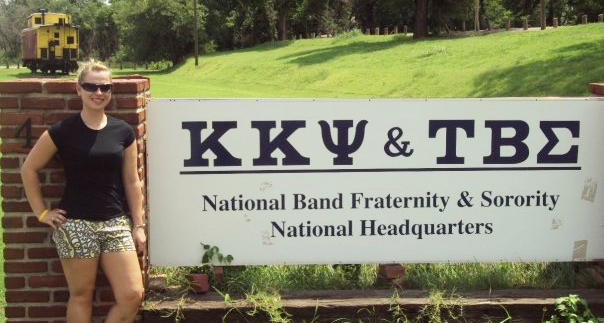

My Kappa Kappa Psi Story
The Active Years
I am a proud member of the Zeta Omicron chapter of Kappa Kappa Psi at the University of Akron, which I joined in the spring of 2007. While at Akron, I served as the Vice President for Service, Alumni Relations Officer, and Chapter President . During my undergraduate studies, I also served as the Chair of the Joint Publications Committee at the 2009 North Central District Convention, and as North Central District President from 2010 to 2011. On the National level, I held the positions of Chair of the Ritual and Regalia Committee in 2009 and Chair of the History and Traditions Committee in 2011. During my time as an Active student, I also had the opportunity to attend the 2010 Northeast and Southwest District Conventions, where I got to reconnect with the Brothers I had met at National Convention in 2009, as well as make new connections. Many of the relationships I now have with Brothers started with an observer’s admiration for their leadership , as I asked them questions about how they achieved their success and how I could continue to grow as a leader myself. I am proud to say that many of these Brothers are still my close friends, whom I still look up to, and call upon openly when I need advice or support , as our Ritual calls for us to do.


The Early Alumni Years
After graduating with degrees in Adolescent Young Adult (grades 7-12) Social Studies Education and History from UA, I continued to seek out ways to serve both my community and the Fraternity . It was also during this time that I moved to North Carolina to begin my teaching career. The first opportunity to serve came in 2013 when I was asked to assist the petitioning group as their advisor. During the 2013-2014 academic school year, I served as Advisor to the group at Elizabeth City State University in Elizabeth City, North Carolina, on their way to being installed as the Nu Iota Chapter. It was during this time I provided feedback to National Vice President Jack D. Lee, about the petitioning group process and ways in which I felt it could be improved , such as not relying on neighboring chapters to provide instruction on the Fraternity's lessons or perform the Ritual (as was the previous standard), as it proved to be an unfair burden to ask chapters who were not immediately nearby.
In 2014, my husband Preston and I moved back home to Ohio, where I continued my career as a social studies teacher. During this time, I also continued to coach high school softball and began coaching girls' soccer, which allowed me to continue to build my leadership skills and work with students outside of the classroom to develop their athletic and leadership skills . During my teaching career, I earned a Master of Arts Degree in History, and I have become certified in two additional teaching areas, Computer Science and Career and Technical Workforce Development in the field of Business Information Systems. My programming skills are a direct result of being a self-starter and learning on my own through trial and error, as well as attending in-person and online workshops and coding boot camps. I believe that by actively pursuing new understanding and embracing opportunities for self-improvement, we can collectively elevate our capabilities and contribute more significantly to our shared goals. It is my hope that this passion for learning becomes a contagious spirit, inspiring each Brother to embark on their own journey of intellectual and personal development, ultimately strengthening our Brotherhood as a whole .

Answering the Call to Serve
In 2016, I was asked to serve as the North Central District Governor. I was honored to be asked to serve in this capacity, and I took my role very seriously. It was during my seven-year tenure as North Central District Governor that a new position was created on the council, Vice President for Communications , where the Governor's Cup began to include a rubric that would allow for the district officers themselves to score the top chapters in our district, and I worked to create workshops that centered on member wellness, mental health, and how to create inclusive, welcoming environments for all. I am proud to call the North Central District home , and to help it grow and thrive.
In 2019, I began serving on the National Curriculum Development Committee , first as a committee member, and then as the Committee Chair for the 2021-2023 biennium. During my time on the committee, a project that I am proud to have initiated was the chapter activity database . This project not only tapped into my technical knowledge but also my passion for making sure students have more resources on how to host and develop meaningful membership activities. The creation of this database is a direct result of the many conversations held with Active members in the North Central District during my tenure as Governor. In addition, during my time as chair, two new lessons for the Road to Wisdom were developed: Our Diversity Matters and Our Sisters Matter . While these lessons were passed along to the National Council, at the time there was not a publications manager at National Headquarters to make final edits. One of the goals I would like to achieve as VPME is to work with the National Council to ensure that these lessons are published and made available to all chapters.
Music is the Touchstone
At the heart of everything I’ve done as a Brother, and the reason I wanted to be one in the first place, is my passion for music and the arts, as well as my drive to continue to reach my maximum potential. I have been involved in music for as long as I can remember, whether it was starting band in 5th grade as a flute player, singing in the church choir, playing my horn in a concert setting, or participating in the athletic bands at UA with a hand-me-down saxophone. I believe that music is a powerful tool for bringing people together . In the past, I have been a member of the Medina County Community Band, one of the oldest community bands in the United States, as well as singing in the choir for several years at the Annunciation Greek Orthodox Church in Akron, Ohio. While I am currently in the beautiful chaos that is raising two young children, I hope to someday soon join my community band, and continue to grow as a musician. I want to help promote music and the appreciation of music within Kappa Kappa Psi, and I want to push our organization to grow and thrive musically in the future.
You're a mission-driven leader with heart and hustle — a future VPME in the making who knows how to blend vision with action. You're thoughtful about your message, strategic with your words, and deeply committed to growing and strengthening Kappa Kappa Psi. Every move you make is intentional, grounded in service and brotherhood, with a clear sense that you're not just running *for* a position — you're running *with purpose*. If I had to sum you up in a slogan? **"Expansion with intention. Leadership with legacy."**